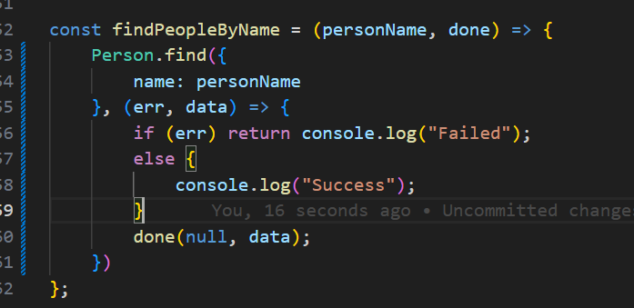

Finding the object in the database.
we can use model.find(). it accepts document, which is a json object and then a callback function.
Returns list of matched documents.

model.findOne()
returns only one document. Even if multiple are present, it will return one only use this best when you have defined unique items
Accepts document as json object, and handler function.

model.findById()
Find the object by the id that is associated in the mongoose.
accepts document and the hadnler function